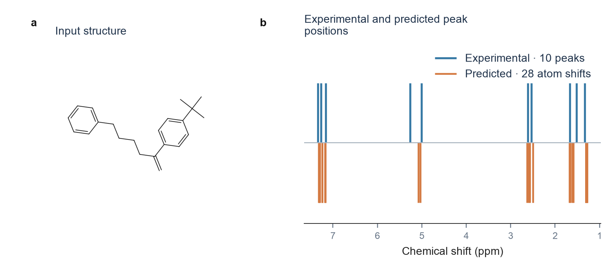
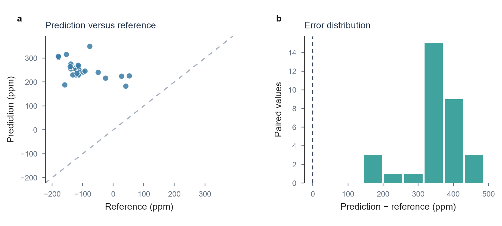
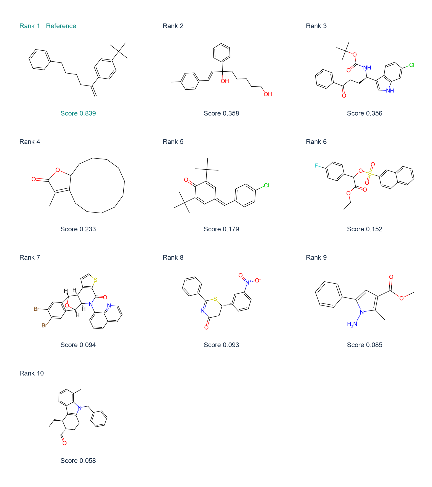
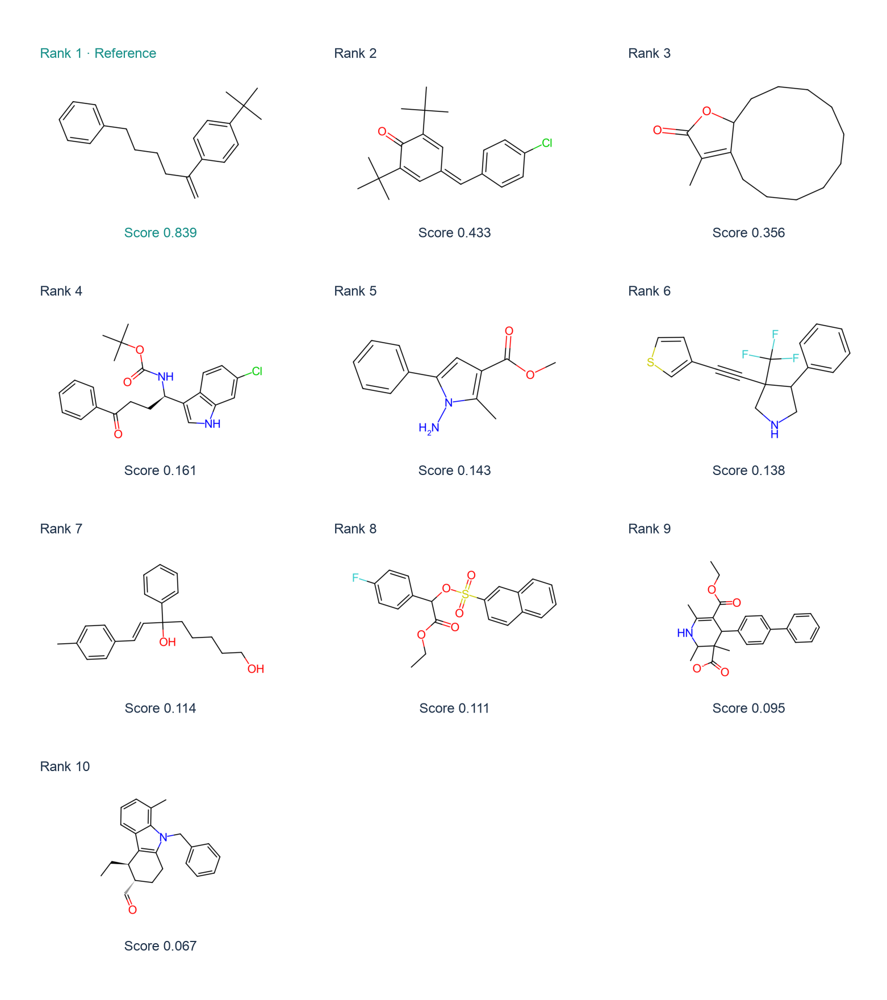
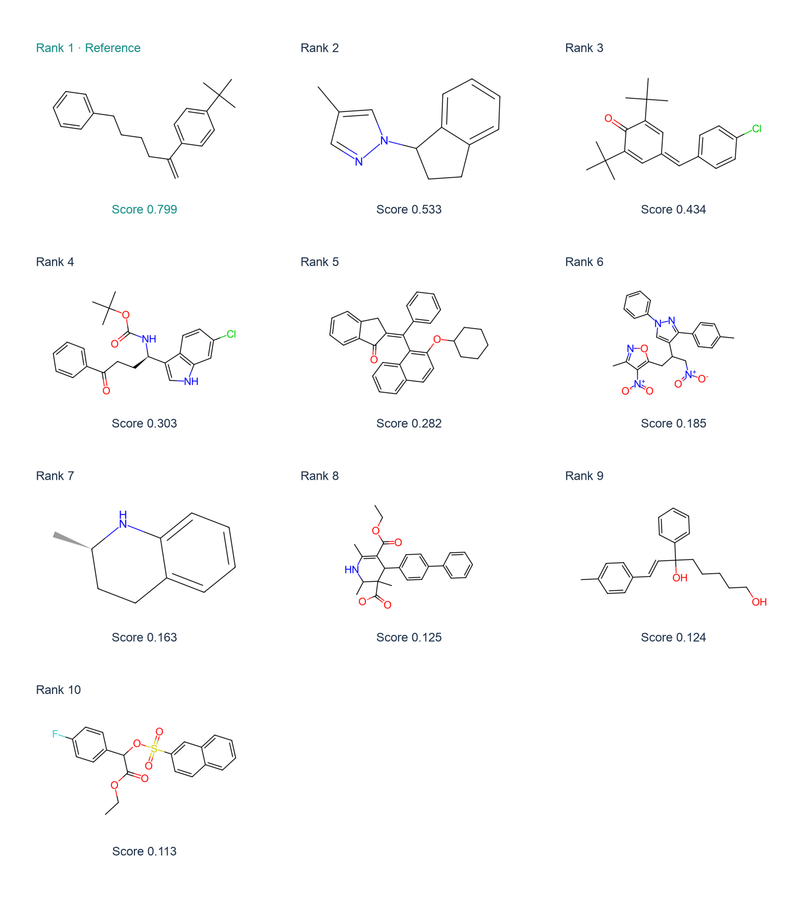
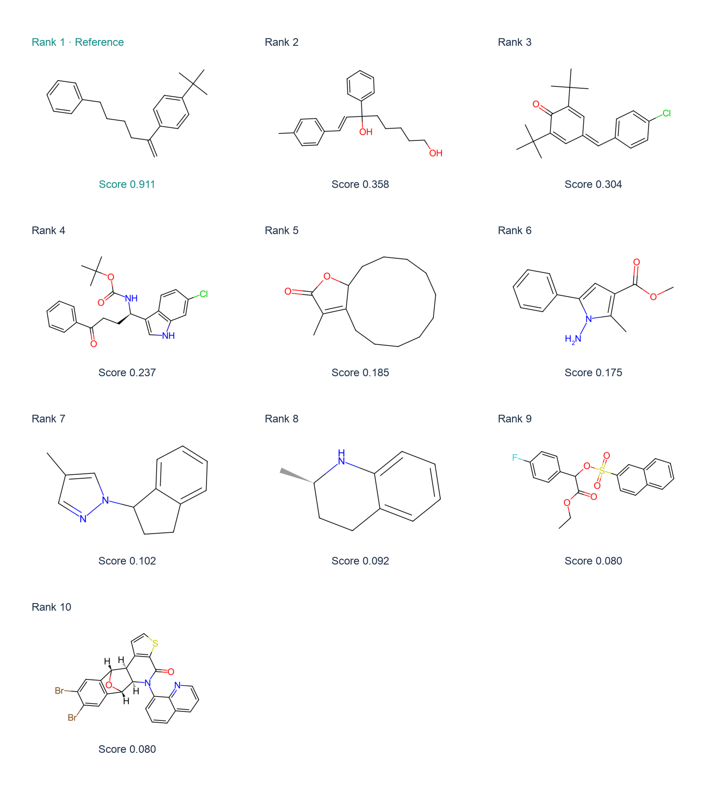
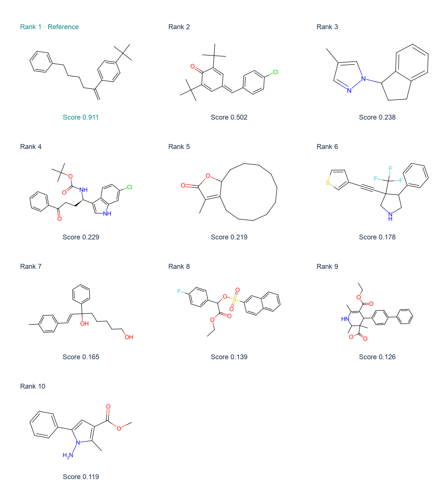
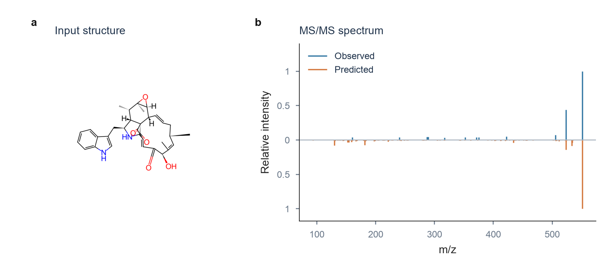
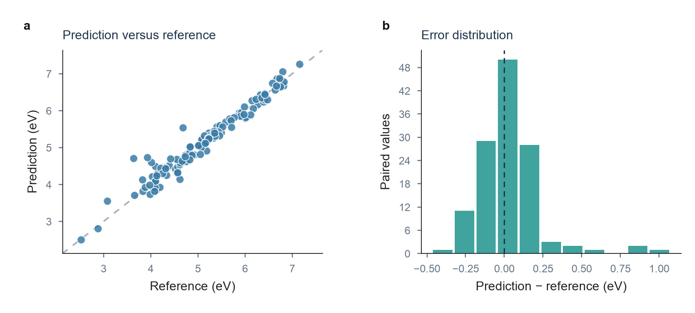

Gallery
Browse model predictions, candidate structures and cleaned-data distributions. Open a task to inspect its inputs, outputs and tutorial.
NMR





















Mass spectrometry





IR / Raman


Multimodal spectroscopy



Dataset distributions